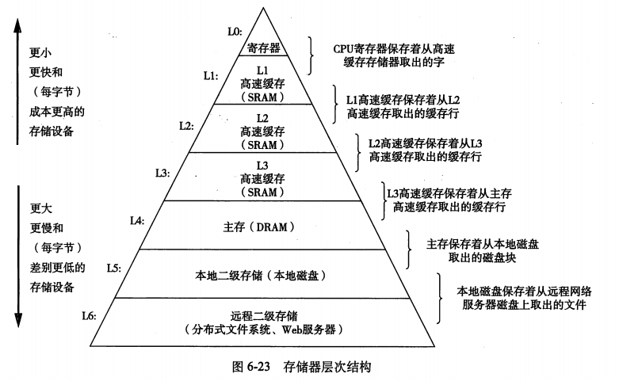

编写高效程序
- 合适的算法和数据结构
- 高效执行的源代码
GCC 命令行标志 -01 到 -03 提供不同程度的优化
妨碍优化的几个因素
存储器别名使用：两个指针可能指向同一个存储器
函数调用：大多数编译器不会判断函数是否有副作用，并保持所有函数调用不变
可以使用内联函数替换（将函数代码展开）对此进行优化（-finline或者-02以上）
运行时间可以通过最小二乘拟合得到，线性因子系数称为每元素的周期数（CPE）的有效数
CPE是主要的优化目标
两种优化界限：
- 延迟界限：指令级并行的能力
- 吞吐量界限：终极限制，处理器功能单元的计算能力
整体操作：分为指令控制单元ICU和执行单元EU，可以乱序执行指令
功能单元的性能：
- 延迟：完成运算总时间
- 发射：连续运算需要的时钟周期数，发射时间为1即为完全流水线化的
循环里的优化
- 代码移动：将strlen或vec_length的计算移出循环（特别是strlen，因为它是O(n)的）
- 减少过程调用
- 减少不必要的存储调用：在临时变量里存放结果代替直接访问
- -02 的优化：会最后将结果写到目标位置，而不是重复读写
- 循环展开：通过增加每次迭代计算的元素数量，减少循环迭代次数。比如在求数组累加和的时候，每次计算两个元素。因为减少了循环分支以及减少了关键路径操作数量，可以提升延迟界限。但是并不能提升浮点数计算的CPE。
- 并行计算：将一组合并运算分割成两个或更多的部分，最后合并结果以提高性能。但是需要注意浮点乘法和加法由于四舍五入或溢出的不可结合性，可能会改变最终结果。
- 重新结合变换：在循环中改变元素合并顺序，减少关键路径操作。同上，可能改变最终结果。
高级设计、编码原则、低级优化
SIMD
SSE=Streaming SIMD Extensions
SIMD是单指令多数据Single-Instruction, Multiple-Data
16字节的XMM可以存放多个值，因此指令会读取多个值并行计算
-msse4
一些限制
- 寄存器溢出
- 分支预测和预测错误处罚
- 可预测的分支不太影响
- 使用功能式风格的代码（用条件操作计算值），而非命令式（用条件语句来选择更新）
- 加载/存储性能
其他
程序剖析 GCC -pg
Amdahl定律
加速比S，其中\alpha是加速部分所占时间比例，k是加速到的倍数。
存储器
- 高速缓存存储器
- 主存储器
- 磁盘

随机访问存储器（RAM），SRAM更快更贵，作为高速存储，一般不超过几MB，而DRAM有可以有几GB
静态RAM（SRAM）
存储在双稳态单元，用六晶体管来实现，可以无限保持在两个不同状态，其他状态都是不稳定的，即使有干扰，也能在干扰消除时恢复稳态。
动态RAM（DRAM）
存储为对一个电容充电，因此对干扰敏感。
传统DRAM
DRAM芯片中的单元被分成d个超单元(supercell)，每个超单元有w个DRAM单元，信息通过引脚(pin)流入流出。
存储器模块
DRAM芯片包装在存储器模块里，常见的168引脚的双列直插存储器模块DIMM，以64位为块，也有72个引脚的单列直插存储器模块SIMM，以32位为块。存储器将地址A转换为超单元地址，然后广播到每个DRAM，每个DRAM输出超单元地址处的8位内容，然后将他们合并为64位双字。
增强的DRAM
- 快页模式 FPM DRAM 允许对同一行连续地址从缓存区访问
- 扩展数据输出 EDO DRAM 允许单独CAS信号时间上更紧密
- 同步 SDRAM 用外部时钟信号上升代替控制信号，输出更快
- 双倍速率同步DRAM（DDR SDRAM）通过两个时钟作为控制，不同DDR是根据预取缓存区大小来划分的 DDR（2位）DDR2（4位） DDR3（8位）
- Rambus DRAM 最大带宽更高
- 视频RAM（Video RAM） 对内部缓存区整个内容移位
非易失性存储器
即使断电也能保存，ROM、PROM、EPROM、EEPROM、闪存
读取主存
I/O通过主线(bus)
磁盘
磁盘存储，比DRAM慢10万倍，比SRAM慢100万倍。
磁盘由多个盘片（platter）构成，盘片有表面（surface）和主轴（spindle），有固定的旋转速率（54k-150k RPM）。每个表面是一组同心圆（磁道track）组成，每个磁道划分为一组扇区（sector）用以储存等长的数据，扇区之间有间隙（gap）。
磁盘操作时，通过传动臂（actuator arm）连接到读写头，通过寻道（seek）定位到磁道上，然后进行读写。读写时间=寻道时间+旋转时间+传送时间，其中寻道时间和旋转延迟大致相等。
磁盘还有逻辑磁盘块，维护逻辑块好和磁盘扇区的映射关系。
连接到I/O设备：通用串行总线（USB）、图形卡、主机总线适配器（将磁盘连接到I/O总线，包括SCSI和SATA）

磁盘控制器收到CPU读命令后，将逻辑块号翻译成扇区地址，然后将这些内容直接传送到主存，不需要CPU干涉，称为直接存储器访问（DMA）。
固态硬盘 SSD：基于闪存技术，更快能耗也更低。
趋势：降低成本（增加密度）比降低访问时间更容易。
局部性
DRAM和磁盘的性能滞后于CPU的性能。现代计算机频繁使用基于SRAM的高速缓存试图弥补这一差距（利用局部性）。
一个编写良好的程序具有良好的局部性（倾向于引用最近引用数据的邻近数据或其本身）。
步长为k的引用模式：stride-k reference pattern，一个连续向量中，每隔k个元素进行访问，随着步长的增加，空间局部性下降。步长为1的引用模式有良好的空间局部性。
取指令的局部性：循环具有好的时间局部性。
存储器层次结构
离CPU越远的存储器缓存越大，延迟越高，传送的块越大。
核心思想是k层的存储设备作为k+1层的存储设备的缓存
- 缓存命中
- 缓存不命中
- 冷缓存（强制性不命中）：缓存是空的
- 冲突不命中
- 容量不命中
高速缓存（S，E，B，m）的通用组织：S个高速缓存组数组，每个组含有E个高速缓存行，每个行有B字节的数据块，1个有效位和t个标记位。m个地址划分为t个标记位，s个组索引位和b个块偏移位。

抖动冲突不命中问题：即使有良好的空间局部性，引用还是会导致冲突不命中，因为这些块被映射到了同一个高速缓存组，一个简单的方法就是在数组结尾放B子节的填充。
用中间位做索引，使得连续存储器映射到不同的高速缓存块。
写的问题：
- 直写 write-through
- 写回 write-back 块要被驱逐时才更新存储器，能显著减少总线流量，但是需要维护额外的修改位
- 写分配 write-allocate（加载之后写）/ 非写分配 not-write-allocate
越往下层传送时间更差，因此越可能使用写回。
举例：矩阵乘法 C=AB
| 乘法版本 | 存储次数 | A不命中次数 | B不命中次数 | C不命中次数 |
|---|---|---|---|---|
| ijk&jik | 0 | 0.25 | 1 | 0 |
| jki&kji | 1 | 1 | 0 | 1 |
| kij&ikj | 1 | 0 | 0.25 | 0.25 |
kij和ikj性能最好。